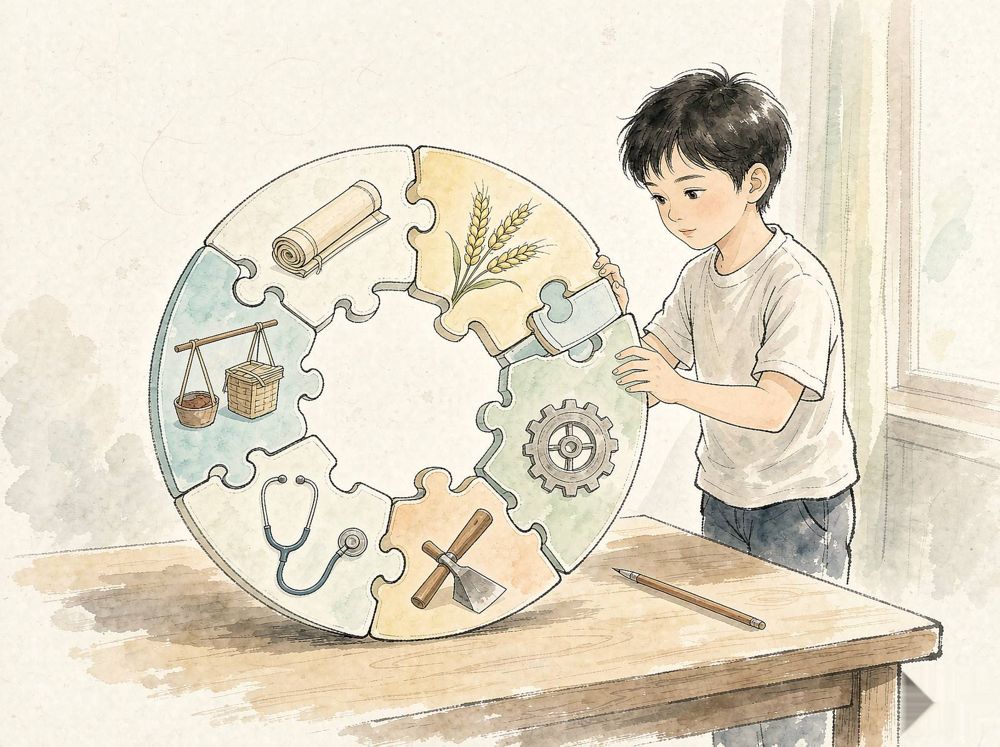

曰士农，曰工商
士掌教化、治理，读道明义；农耕植生产，供给衣食根本；工制作器物、巧艺造物；商互通有无、流转货资。
对比「称行省，三十五」：上一课讲国土空间的区划，这一课转入人间社会，讲人群职业的分工。行省是土地层面的分别，四民是人群职业层面的分别；二者同属人文建立的分类名相，不是天地本然的分界。再对比「古九州，今改制」：九州、行省的界线随时代改易，四民这套框架同样随时代流变，古今职业形态已大不相同。
前面我们学习国土可以划分为九州、行省，界线、数目都会随时代调整。
经文接着告诉我们，古人把世间谋生的人群，分成四类：士、农、工、商。
古人的想法很朴素：有人读书明理、治理事务，有人耕种粮食滋养大众，有人制作器物，有人奔走交换物资。

放到今天来看，职业已经非常丰富：教师、医生、工程师、程序员、设计师、物流、服务业等等，远远不止四类。
但是底层道理相通：每一份职业，都是社会分工里的一环，彼此相依。

这些分类标签，是人为了方便认知、安排秩序而设立的，不是人天生就固定属于某一类。
落到心上理解：四民只是一套分类标签。不要执着「士更高贵、商更卑下」这类旧的分别心。职业有分工，自性无高下；无论做哪一件事，都可以守住本心、尽心而行，也不必被职业标签定义自己。
认定某一类职业高人一等，被自己的身份、岗位标签束缚，生出傲慢或自卑。
知晓分类是治理教化的方便，职业只是分工不同；各安其职、互为滋养，自性本体无高低差别。
- 士农工商，是上古形成的社会四民分类框架。
- 分类是人为设立，用来理解社会分工，不是天生的等级。
- 时代变迁，新职业不断涌现，四民只是一个旧的概括范式。
- 做事可以尽责，心中不起职业高下的分别，便是观照。
一、勘俗见。古代常有「士为贵，商为末」的偏见，经文只列举四类分工，本身并不支持尊卑等级。
二、现代对照。今天的社会分工远比四民复杂，科研、医护、基建、互联网、服务业，都可以归入这套「各尽其用、互通相生」的底层逻辑。
三、承接常变之辨。和前面的九州、行省一脉：分类框架可以沿用参考，分类名目、内涵随时迭代。
四、承接教与学二分。家长引导看见社会互相依存、破除职业贵贱的分别心，属施教一侧；孩子练习不拿职业、身份评判他人，是自主修习。
接上选择力练习：分工名相万千，我们在岗位上尽责，心中不起高下之执。
曰士农，曰工商
一 · 字义与句读四民，是先秦成型、后世沿用的社会人群分类。《管子·小匡》「士农工商四民者，国之石民也」，以四者为国之柱石；《汉书·食货志》「士农工商，四民有业」，各安其业。
士，本义事也，立身行道，承教化治理之责；农为本，供养民生；工以技成物；商以流通济有无。
全句释义：古人归纳人群之业，约为士、农、工商四类。此为世间人文分类之一种，随时代流转，业态、内涵持续演变。承接上一节国土区划，从空间分别转入人群分别。
二 · 命题考辨（一）四民本义与后世的异化。源头之初，四民重在分工相济，是功能性划分：社会需要不同职能，互相支撑。后世礼教演化，慢慢附加上尊卑次序，形成「重本抑末」，崇士、抑商。这一层附加的价值等级，并不是经文本句所要表达的；《三字经》此处只是列举类别，陈述世间分工格局。
（二）「士」的名实之变。先秦之士多为武士、下级贵族，孔门之后渐有文士；汉以察举、隋唐以科举，「士」遂与读书仕进合流。故四民之「士」，在先秦与在后世所指并不全同。讲分类，先辨名实，才不至于用后世的「士」去套先秦的「士」。
（三）对照今日社会分工。现代社会分工高度细化，早已突破四民框架：古时「士」的功能，分化为公职、教师、学者、科研、法务、医疗等脑力与公共服务群体；「农」拓展为现代农业、种业、农林生态；「工」延伸为工程师、制造、基建、技术研发；「商」扩展为流通、供应链、市场、服务业、数字经济。甚至出现大量跨边界的职业，一人可以兼具多重职能。
如同九州演变为行省、增设特区：四民是一张古老的分工快照，快照的逻辑「相依共生」仍有效，快照本身的类目清单已经过时。
（四）般若范式互参。士农工商，是相待假名。天地之间，人本无「士、农、工、商」的天然标签；标签是为了组织社会、分配职能、安顿民生而设立的方便名相。联动空杯模型：众生自性是本体，生命活动为显现，职业分类是叠加其上的分别名相；相有分工，本体无隔，无高无下。
呼应「本乎数」：四，取四象四方之数，用四数建立秩序归类；数是归类工具，不可执四类为世间唯一的划分。
（五）延伸义理。修行最容易落入的一层执着，就是以身份、行当、法门分高下：修道高于经商，禅修高于日常做事。此章恰是对治这一层：分工是世间安排，自性不随职业升降。只要应事尽责，不住于相，农工商贾，皆是道场。
三 · 跨典互参庄子《人间世》：「乘物以游心，托不得已以养中，至矣。」原稿作「各行各业皆是人间行事，善养其心，无往不可」，是概括而非原文，今依本文。其义在乘物而不为物所役，正是四民之中养心之法。
《金刚经》：「应无所住而生其心。」行一切事业，而不执事业之相、身份之相。
和「古九州、今改制」成一组对照：国土的疆界是分别，人群职业也是分别；一切分别，皆是随宜施设。
四 · 与前后课的张力呼应「人不学，不知义」：义在于看破分别之相，知分工相生，而不被尊卑标签困住。
呼应「玉不琢，不成器」：打磨自心，即是在日常职业之中，消融高下之见。
呼应「教之道，贵以专」：见闻之学，既要了解社会分工，又不被古旧分类框架局限认知。
次第链条继续延伸：…… → 古九州，今改制 → 称行省，三十五 → 本课
一、分工既然是假名，社会又为何需要稳定的职业分类与评价体系？
二、「无高下」是不是等同于不分善恶、不择行业？如何区分正业、邪业？
三、一人多职、跨界谋生的时代，如何在多重身份之中守住本心？